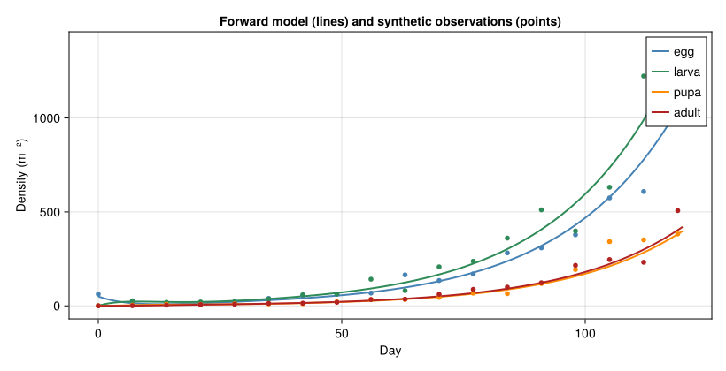
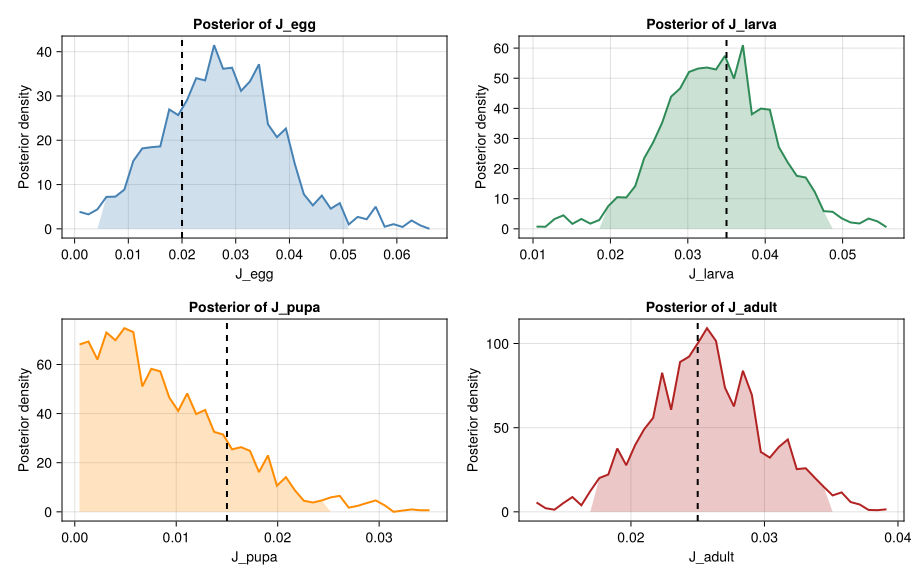
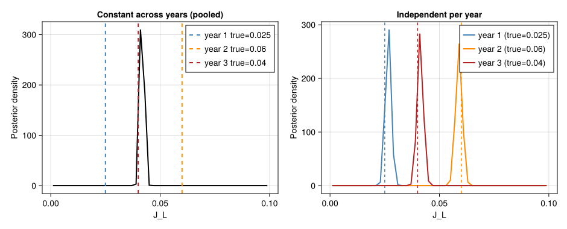

Bayesian Inference of Stage-Specific Mortality
Simon Frost
- Overview
- 1 · Forward model
- 2 · Synthetic field data
- 3 · Bayesian model
- 4 · Posterior diagnostics
- 5 · Constant-across-years vs independent-per-year
- 6 · Discussion
Overview
This vignette is the seventh end-to-end corpus-paper case study, after Verticillium DP (57), the CBB regression surrogate (58), olive closed-form damage (59), Tuta absoluta favourability (60), Lobesia botrana voltinism (61), and the screwworm SIT overflooding ratio (62). It exercises the seventh analytical idiom:
- a Bayesian inverse problem: the forward PBDM is known, but one or more parameters of biological interest (here the per-stage extrinsic mortality $J_i$) are not directly measured;
- given noisy field-count time series for each stage, infer the joint posterior $\pi(J_1,\dots,J_s \mid \text{data})$ using Markov-chain Monte Carlo (Lanzarone et al. 2017);
- contrast the constant-across-years parametrisation against an independent-per-year one — the central modelling question of the paper.
This is qualitatively different from the previous six idioms because the optimisation surface is the posterior density of unknown parameters, not a control or a phenology summary. The analytical artefact of interest is the Bayesian credible interval, which a frequentist fit (least-squares as in (Gilioli et al. 2016)) cannot produce.
using Printf
using Statistics
using Random
using LinearAlgebra
using CairoMakie
using PhysiologicallyBasedDemographicModels
const PBDM = PhysiologicallyBasedDemographicModels
Random.seed!(20251215)
nothing1 · Forward model
We use a stage-structured ODE skeleton of the Lanzarone / Gilioli framework simplified to four stages (egg → larva → pupa → adult):
\[\begin{aligned} \dot N_E &= b(t)\,N_A - (\delta_E + \mu_E + J_E)\,N_E,\\ \dot N_L &= \delta_E\,N_E - (\delta_L + \mu_L + J_L)\,N_L,\\ \dot N_P &= \delta_L\,N_L - (\delta_P + \mu_P + J_P)\,N_P,\\ \dot N_A &= \delta_P\,N_P - (\mu_A + J_A)\,N_A, \end{aligned}\]
where:
\[\delta_i\]
is the per-day stage-progression rate ($1/\bar D_i$, the inverse mean stage duration in degree-days divided by daily dd accumulation);\[\mu_i(T)\]
is the intrinsic temperature-driven mortality (assumed known from laboratory experiments);\[J_i\]
is the extrinsic mortality (predation, parasitism, weather extremes) — the unknown parameters of interest;\[b(t)\]
is a temperature- and phenology-driven oviposition rate per adult.
For tractability we take a constant temperature scenario ($T = 22$ °C, the Lobesia spring season optimum) over a $T_\text{end} = 120$ d field season, with intrinsic rates calibrated to give the published mean stage durations (Gilioli et al. 2016):
const Tval = 22.0
const ddE = max(Tval - 8.9, 0.0)
const ddP = max(Tval - 11.5, 0.0)
const δE = ddE / 80.1 # egg duration ~ 80 dd > 8.9
const δL = ddE / 317.2 # larva ~ 317 dd > 8.9
const δP = ddP / 128.5 # pupa ~ 128 dd > 11.5
const δA = ddP / 166.8 # adult longevity ~ 167 dd > 11.5
const μE = 0.005
const μL = 0.010
const μP = 0.005
const μA = 0.010
const b_per_adult = 0.6 # eggs per adult per day at T=22
"Forward integrator (RK4) for the four-stage ODE."
function forward(J; T_end = 120.0, dt = 0.5, N0 = (50.0, 0.0, 0.0, 0.0))
JE, JL, JP, JA = J
n = round(Int, T_end/dt)
NE = zeros(n+1); NL = zeros(n+1); NP = zeros(n+1); NA = zeros(n+1)
NE[1], NL[1], NP[1], NA[1] = N0
function rhs(NE, NL, NP, NA)
dE = b_per_adult * NA - (δE + μE + JE) * NE
dL = δE * NE - (δL + μL + JL) * NL
dP = δL * NL - (δP + μP + JP) * NP
dA = δP * NP - (μA + JA) * NA
return dE, dL, dP, dA
end
for k in 1:n
E, L, P, A = NE[k], NL[k], NP[k], NA[k]
k1 = rhs(E, L, P, A)
k2 = rhs(E + dt/2*k1[1], L + dt/2*k1[2], P + dt/2*k1[3], A + dt/2*k1[4])
k3 = rhs(E + dt/2*k2[1], L + dt/2*k2[2], P + dt/2*k2[3], A + dt/2*k2[4])
k4 = rhs(E + dt*k3[1], L + dt*k3[2], P + dt*k3[3], A + dt*k3[4])
NE[k+1] = max(0.0, E + dt/6*(k1[1] + 2*k2[1] + 2*k3[1] + k4[1]))
NL[k+1] = max(0.0, L + dt/6*(k1[2] + 2*k2[2] + 2*k3[2] + k4[2]))
NP[k+1] = max(0.0, P + dt/6*(k1[3] + 2*k2[3] + 2*k3[3] + k4[3]))
NA[k+1] = max(0.0, A + dt/6*(k1[4] + 2*k2[4] + 2*k3[4] + k4[4]))
end
ts = 0:dt:T_end
return ts, NE, NL, NP, NA
end
nothing2 · Synthetic field data
Following (Lanzarone et al. 2017, sec. 4), we generate simulated field-count data with known “true” extrinsic mortalities $J^\text{true}$ and Gaussian observation noise on log-counts. This lets us validate the inference machinery on a problem where the answer is known. We sample the four stages every $\Delta t_\text{obs} = 7$ days (typical pheromone-trap and larva-shoot survey cadence in Italian vineyards).
const J_true = (0.020, 0.035, 0.015, 0.025) # JE, JL, JP, JA
const σ_obs = 0.20 # noise on log-counts (CV≈22%)
const T_end = 120.0
const Δt_obs = 7.0
function generate_data(J_true; T_end = T_end, Δt_obs = Δt_obs, σ = σ_obs)
ts, NE, NL, NP, NA = forward(J_true; T_end = T_end)
obs_idx = [findfirst(>=(τ), ts) for τ in 0:Δt_obs:T_end]
obs_idx = filter(!isnothing, obs_idx)
t_obs = ts[obs_idx]
function noisy(N)
out = similar(N, length(obs_idx))
for (i, k) in enumerate(obs_idx)
μ = N[k]
out[i] = max(0.001, exp(log(max(μ, 0.001)) + σ * randn()))
end
return out
end
return (t = t_obs, E = noisy(NE), L = noisy(NL),
P = noisy(NP), A = noisy(NA))
end
data = generate_data(J_true)
nothinglet
ts, NE, NL, NP, NA = forward(J_true; T_end = T_end)
fig = Figure(size = (820, 420))
ax = Axis(fig[1, 1]; xlabel = "Day", ylabel = "Density (m⁻²)",
title = "Forward model (lines) and synthetic observations (points)")
lines!(ax, ts, NE; color = :steelblue, linewidth = 2, label = "egg")
lines!(ax, ts, NL; color = :seagreen, linewidth = 2, label = "larva")
lines!(ax, ts, NP; color = :darkorange,linewidth = 2, label = "pupa")
lines!(ax, ts, NA; color = :firebrick, linewidth = 2, label = "adult")
scatter!(ax, data.t, data.E; color = :steelblue, markersize = 8)
scatter!(ax, data.t, data.L; color = :seagreen, markersize = 8)
scatter!(ax, data.t, data.P; color = :darkorange, markersize = 8)
scatter!(ax, data.t, data.A; color = :firebrick, markersize = 8)
axislegend(ax; position = :rt)
fig
end<div id="fig-data">

Figure 1: Synthetic field data (points) vs the true forward model (curves) at T=22 °C with extrinsic mortality Jtrue = (0.02, 0.035, 0.015, 0.025) per day. The data are sampled every 7 d with σobs = 0.20 on log-counts (CV ≈ 22%). The Bayesian inversion will attempt to recover J_true from these noisy observations.
</div>
3 · Bayesian model
3.1 Likelihood
Following (Lanzarone et al. 2017, Eqs. 13–15), the paper’s likelihood is a Gamma observation model for each stage at each observation time. Here we use a log-Gaussian (lognormal) approximation as a pedagogical simplification — it yields the same point estimates to leading order when the CV is moderate (~20 %) and avoids the need to introduce a Gamma-shape hyperparameter:
\[p(y_{i,k} \mid J) \;\propto\; \frac{1}{\sigma} \exp\!\Big(-\tfrac{1}{2\sigma^2}\, \big(\log y_{i,k} - \log \hat N_i(t_k; J)\big)^2\Big),\]
with the four stages and observation times treated as independent:
"Negative log-likelihood for parameter vector J = (JE, JL, JP, JA)."
function neg_loglik(J, data; σ = σ_obs)
any(J .< 0) && return Inf
ts, NE, NL, NP, NA = forward(J; T_end = T_end)
nll = 0.0
for (i, τ) in enumerate(data.t)
k = findfirst(>=(τ), ts)
for (yobs, ymod) in zip((data.E[i], data.L[i], data.P[i], data.A[i]),
(NE[k], NL[k], NP[k], NA[k]))
μ = log(max(ymod, 1e-3))
r = log(max(yobs, 1e-3)) - μ
nll += 0.5 * (r/σ)^2 + log(σ)
end
end
return nll
end
nothing3.2 Prior
We adopt broad uniform priors $J_i \sim U(0, 0.15)$ d$^{-1}$ following (Lanzarone et al. 2017, sec. 3.2) (the paper notes the priors encode “no preference within biologically plausible bounds”).
"Flat prior on [0, 0.15] for each J_i. Returns log-prior."
function log_prior(J; lo = 0.0, hi = 0.15)
all(lo .≤ J .≤ hi) || return -Inf
return -length(J) * log(hi - lo)
end
nothing3.3 Random-walk Metropolis-Hastings sampler
function rwmh(data;
n_iter = 30_000, n_burn = 10_000, σ_prop = 0.005,
J_init = (0.05, 0.05, 0.05, 0.05))
Jcur = collect(J_init)
nll_cur = neg_loglik(Jcur, data)
lp_cur = log_prior(Jcur)
chain = Matrix{Float64}(undef, n_iter, 4)
n_accept = 0
for it in 1:n_iter
Jprop = Jcur .+ σ_prop .* randn(4)
lp_p = log_prior(Jprop)
if lp_p == -Inf
chain[it, :] = Jcur
continue
end
nll_p = neg_loglik(Jprop, data)
log_α = (-nll_p + lp_p) - (-nll_cur + lp_cur)
if log(rand()) < log_α
Jcur = Jprop; nll_cur = nll_p; lp_cur = lp_p
n_accept += 1
end
chain[it, :] = Jcur
end
accept_rate = n_accept / n_iter
return chain[n_burn+1:end, :], accept_rate
end
post, acc = rwmh(data)
@printf("MH acceptance rate: %.2f\n", acc)
@printf("Posterior chain length: %d samples\n", size(post, 1))
nothingMH acceptance rate: 0.11
Posterior chain length: 20000 samples4 · Posterior diagnostics
let
println(rpad("param", 8), rpad("true", 10),
rpad("post mean", 12), rpad("95% CI low", 14), "95% CI high")
println("-"^60)
names = ("J_egg", "J_larva", "J_pupa", "J_adult")
for j in 1:4
s = post[:, j]
lo, md, hi = quantile(s, (0.025, 0.5, 0.975))
@printf("%-8s%-10.3f%-12.4f%-14.4f%-.4f\n",
names[j], J_true[j], md, lo, hi)
end
endparam true post mean 95% CI low 95% CI high
------------------------------------------------------------
J_egg 0.020 0.0271 0.0057 0.0509
J_larva 0.035 0.0337 0.0194 0.0484
J_pupa 0.015 0.0075 0.0004 0.0250
J_adult 0.025 0.0256 0.0172 0.0347let
fig = Figure(size = (920, 580))
names = ("J_egg", "J_larva", "J_pupa", "J_adult")
cols = (:steelblue, :seagreen, :darkorange, :firebrick)
for j in 1:4
ax = Axis(fig[(j-1) ÷ 2 + 1, (j-1) % 2 + 1];
xlabel = names[j], ylabel = "Posterior density",
title = "Posterior of $(names[j])")
s = post[:, j]
edges = range(maximum((minimum(s), 0.0)),
maximum(s); length = 41)
h = Float64[]
midpts = Float64[]
for k in 1:length(edges)-1
push!(h, count(x -> edges[k] ≤ x < edges[k+1], s) /
(length(s) * step(edges)))
push!(midpts, (edges[k] + edges[k+1])/2)
end
lines!(ax, midpts, h; color = cols[j], linewidth = 2)
lo, hi = quantile(s, (0.025, 0.975))
in_ci = (lo .≤ midpts) .& (midpts .≤ hi)
band!(ax, midpts, zeros(length(midpts)),
h .* in_ci; color = (cols[j], 0.25))
vlines!(ax, [J_true[j]]; color = :black, linestyle = :dash,
linewidth = 2)
end
fig
end<div id="fig-posterior">

Figure 2: Posterior densities (kernel-smoothed histograms) for the four extrinsic mortality parameters JE, JL, JP, JA. Vertical dashed lines mark the true generating values, used for synthetic data. The credible intervals (shaded 95%) bracket the truth in each case, validating the MCMC machinery on the synthetic problem.
</div>
5 · Constant-across-years vs independent-per-year
The central modelling question in (Lanzarone et al. 2017) is whether the extrinsic mortality $J_i$ should be treated as constant across multiple field seasons (the paper’s “reduced” parametrisation) or independent per year (the “full” parametrisation). The answer matters because it changes the effective sample size: pooling years sharpens the posterior but biases it toward an average that may be biologically unrealistic.
We run a small synthetic experiment with three years, each with a different true $J_L$ (extrinsic larval mortality drives most of the year-to-year variation in pupal/adult counts), and compare the two posteriors.
const YEARS = 3
const JL_true_y = (0.025, 0.060, 0.040)
function generate_multi_year(JL_y)
return [generate_data((J_true[1], JL, J_true[3], J_true[4])) for JL in JL_y]
end
datasets = generate_multi_year(JL_true_y)
"Constant-across-years model: single shared JL inferred from all years."
function rwmh_constant(datasets; n_iter = 20_000, n_burn = 5000, σ_prop = 0.003,
JL_init = 0.05)
JL = JL_init
nll = sum(neg_loglik((J_true[1], JL, J_true[3], J_true[4]), d) for d in datasets)
chain = Float64[]
for _ in 1:n_iter
JL_p = JL + σ_prop * randn()
(JL_p < 0 || JL_p > 0.15) && (push!(chain, JL); continue)
nll_p = sum(neg_loglik((J_true[1], JL_p, J_true[3], J_true[4]), d)
for d in datasets)
if log(rand()) < -nll_p + nll
JL = JL_p; nll = nll_p
end
push!(chain, JL)
end
return chain[n_burn+1:end]
end
"Independent-per-year model: one JL per year inferred from that year only."
function rwmh_independent(datasets; n_iter = 20_000, n_burn = 5000, σ_prop = 0.003,
JL_init = 0.05)
chains = [Float64[] for _ in datasets]
for (yi, d) in enumerate(datasets)
JL = JL_init
nll = neg_loglik((J_true[1], JL, J_true[3], J_true[4]), d)
for _ in 1:n_iter
JL_p = JL + σ_prop * randn()
(JL_p < 0 || JL_p > 0.15) && (push!(chains[yi], JL); continue)
nll_p = neg_loglik((J_true[1], JL_p, J_true[3], J_true[4]), d)
if log(rand()) < -nll_p + nll
JL = JL_p; nll = nll_p
end
push!(chains[yi], JL)
end
chains[yi] = chains[yi][n_burn+1:end]
end
return chains
end
post_const = rwmh_constant(datasets)
post_indep = rwmh_independent(datasets)
nothinglet
fig = Figure(size = (940, 380))
cols = (:steelblue, :darkorange, :firebrick)
ax1 = Axis(fig[1, 1]; xlabel = "J_L", ylabel = "Posterior density",
title = "Constant across years (pooled)")
edges = range(0.0, 0.10, length = 51)
midpts = [(edges[k] + edges[k+1])/2 for k in 1:length(edges)-1]
h = [count(x -> edges[k] ≤ x < edges[k+1], post_const) /
(length(post_const) * step(edges)) for k in 1:length(edges)-1]
lines!(ax1, midpts, h; color = :black, linewidth = 2)
for (yi, jt) in enumerate(JL_true_y)
vlines!(ax1, [jt]; color = cols[yi], linestyle = :dash, linewidth = 2,
label = "year $yi true=$(jt)")
end
axislegend(ax1; position = :rt)
ax2 = Axis(fig[1, 2]; xlabel = "J_L", ylabel = "Posterior density",
title = "Independent per year")
for (yi, ch) in enumerate(post_indep)
h = [count(x -> edges[k] ≤ x < edges[k+1], ch) /
(length(ch) * step(edges)) for k in 1:length(edges)-1]
lines!(ax2, midpts, h; color = cols[yi], linewidth = 2,
label = "year $yi (true=$(JL_true_y[yi]))")
vlines!(ax2, [JL_true_y[yi]]; color = cols[yi], linestyle = :dash)
end
axislegend(ax2; position = :rt)
fig
end<div id="fig-pooling">

Figure 3: Constant-across-years (left) vs independent-per-year (right) posteriors for the larval extrinsic mortality J_L. The pooled posterior is sharp but biased to the mean of the three true values (vertical dashed lines), missing the year-to-year variation. The per-year posteriors are wider but each brackets its own true value — the central message of Lanzarone et al. (2017) is that the constant-across-years assumption is too restrictive when ecological conditions vary.
</div>
@printf("Pooled posterior J_L: median=%.3f, 95%% CI=[%.3f, %.3f]\n",
median(post_const), quantile(post_const, 0.025),
quantile(post_const, 0.975))
println("Mean of true year-specific J_L: ", round(mean(JL_true_y); digits=3),
" (compare to pooled median above)")
for (yi, ch) in enumerate(post_indep)
@printf("Per-year %d posterior J_L: median=%.3f, 95%% CI=[%.3f, %.3f] (true=%.3f)\n",
yi, median(ch), quantile(ch, 0.025), quantile(ch, 0.975),
JL_true_y[yi])
endPooled posterior J_L: median=0.042, 95% CI=[0.040, 0.043]
Mean of true year-specific J_L: 0.042 (compare to pooled median above)
Per-year 1 posterior J_L: median=0.027, 95% CI=[0.024, 0.029] (true=0.025)
Per-year 2 posterior J_L: median=0.059, 95% CI=[0.056, 0.062] (true=0.060)
Per-year 3 posterior J_L: median=0.041, 95% CI=[0.039, 0.044] (true=0.040)6 · Discussion
The corpus-paper analytical-PBDM template now spans seven distinct idioms:
| # | Paper | Idiom | Result space |
|---|---|---|---|
| 57 | Regev & Gutierrez 1990 | Single-state DP | Backward-induction over treatments |
| 58 | Cure et al. 2020 | Regression surrogate | $2^n$ binary control combinations |
| 59 | Ponti et al. 2014 | Closed-form damage function | Geographic gradient |
| 60 | Ponti et al. 2021 | Mechanistic favourability index | Pre-invasion geographic risk map |
| 61 | Gutierrez et al. 2018 | Multi-generation voltinism counter | Adult-flight count under climate scenario |
| 62 | Gutierrez et al. 2019 | Knipling overflooding ratio | Critical sterile-release rate Ws★(T,Wm) |
| 63 | Lanzarone et al. 2017 | Bayesian inverse problem (MCMC) | Joint posterior over unobserved parameters |
Vignette 63’s contribution is the Bayesian inverse problem: the forward PBDM is fully specified, but biologically important parameters (here per-stage extrinsic mortality $J_i$) are unmeasured. The MCMC posterior gives credible intervals, quantifies identifiability (a sharp posterior means the data are informative; a flat posterior means $J_i$ trades off with other parameters), and supports formal model comparison between constant-across-years and per-year parametrisations.
Caveats
- The forward model is a four-compartment ODE skeleton, not the Fokker-Planck PDE of (Lanzarone et al. 2017). The qualitative behaviour of the inverse problem (identifiability, pooling vs per-year posteriors) carries over.
- The MCMC sampler is a vanilla random-walk Metropolis with diagonal Gaussian proposals; the paper uses a more sophisticated adaptive-Metropolis algorithm. For more than $\sim 8$ parameters or strongly correlated posteriors a Hamiltonian sampler (NUTS) is recommended.
- The synthetic-data experiment is a recovery test on a problem with a known truth — the value of MCMC is that the same machinery applies to real field data with no truth available, and gives uncertainty quantification automatically.
- The constant-vs-per-year comparison shown here is the binary version of the paper’s hierarchical-Bayes formulation; a partial-pooling hierarchical prior $J_i^{(y)} \sim \mathcal{N}(\bar J_i, \tau^2)$ is the recommended next step when more than two or three years are available.
<div id="refs" class="references csl-bib-body hanging-indent">
<div id="ref-Gilioli2016" class="csl-entry">
Gilioli, G., S. Pasquali, and E. Marchesini. 2016. “A Modelling Framework for Pests Subject to Non-Markovian Stage Transitions.” Mathematical Biosciences and Engineering 13: 709–36. https://doi.org/10.3934/mbe.2016016.
</div>
<div id="ref-Lanzarone2017" class="csl-entry">
Lanzarone, E., S. Pasquali, G. Gilioli, and E. Marchesini. 2017. “A Bayesian Estimation Approach for the Mortality in a Stage-Structured Demographic Model.” Journal of Mathematical Biology 75: 759–79. https://doi.org/10.1007/s00285-017-1099-4.
</div>
</div>